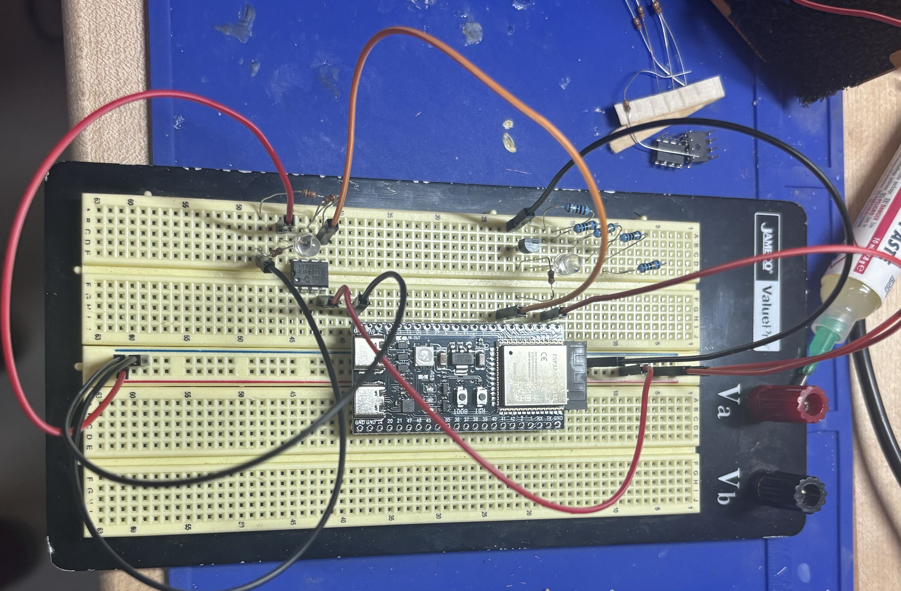

I am developing a wearable sensing system designed to interpret muscle activity in the forearm and translate it into control signals for a prosthetic hand.
The project explores lightmyography (LMG) as a non-invasive muscle-sensing approach. Rather than relying exclusively on electrical activity from muscles, the system investigates how changes in muscle tissue and contraction can be detected optically.
The long-term goal is to create a compact forearm-worn interface capable of recognizing intentional hand and wrist movements and using that information as an input for prosthetic control. I became particularly interested in LMG because it offers the possibility of a wearable interface that can collect spatial information across the forearm while remaining relatively compact. One of the most important lessons from this research has been that signal quality is only part of the problem; a wearable interface also has to deal with changes in positioning, pressure, movement, individual anatomy, and day-to-day variability.

This stage has involved building and testing the electronics needed to capture and process optical muscle signals, including phototransistors, infrared (IR) LEDs, op-amps, analog signal conditioning, and analog-to-digital conversion on an ESP32-based acquisition system. I designed the circuit schematics in KiCad, and I'm developing firmware in C++ to control the IR light output and test whether the phototransistors can read the resulting values.
I've also been working on the physical design of the sensor setup, including light isolation and consistent contact with the forearm, to improve the reliability of the measurements.